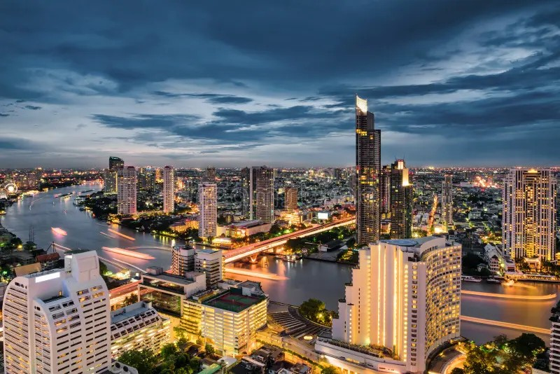
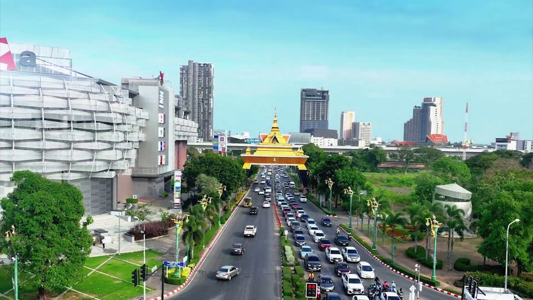
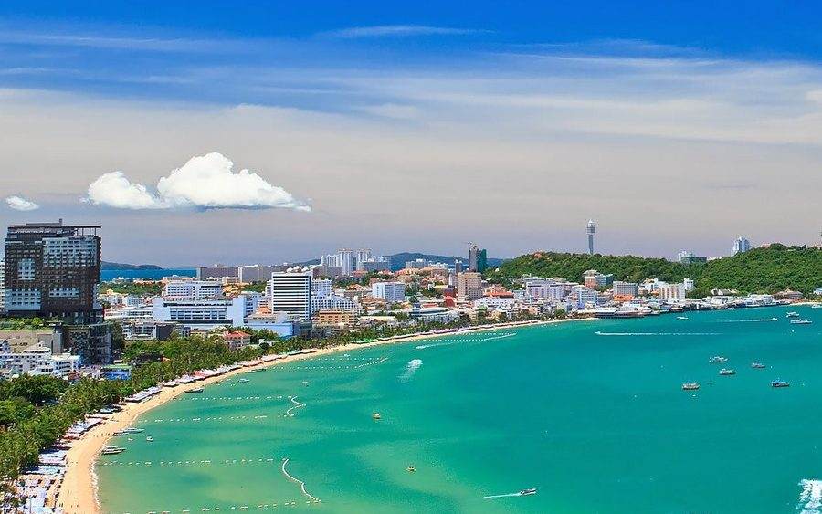
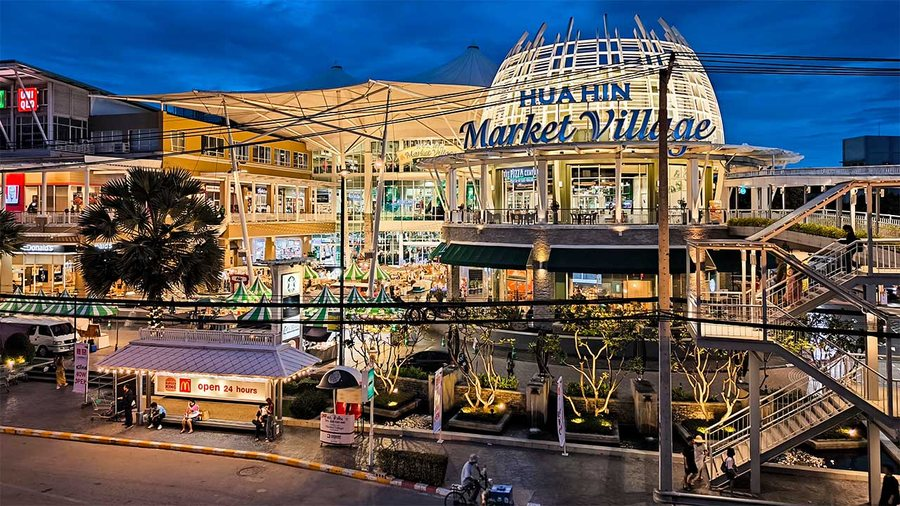
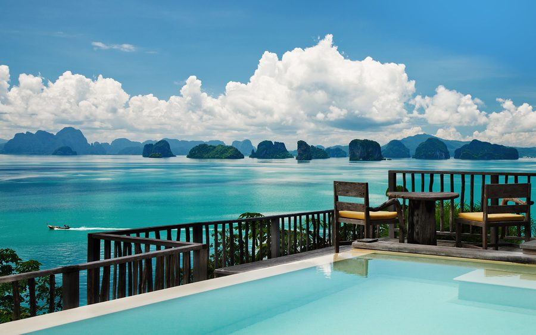
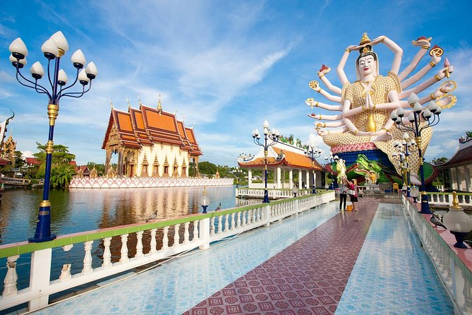

Thailand City Guide
Picking the right city matters as much as picking the right visa. This honest 2026 guide walks you through the seven places foreigners actually settle in — with real monthly costs, the upsides, the catches, and who each one suits best.
Find the home that fits the life you want
Thailand is not one place. A retiree wanting quiet sea air, a digital nomad chasing fast wifi and cafés, and a family needing good international schools will each be happiest somewhere different. Below, the seven most popular long-stay destinations are laid out in order — from the big-city buzz of Bangkok to the laid-back islands. Each section gives you a realistic all-in monthly budget for a single person in 2026, the honest pros and cons, the best neighbourhoods for foreigners, and a quick read on who fits best. Costs assume a comfortable-but-sensible lifestyle: a decent one-bedroom, eating a mix of local and Western food, transport, utilities, a SIM, and some social life — not a backpacker's bare minimum, and not a luxury villa.
Bangkok

Bangkok is the beating heart of Thailand — a fast, electric megacity where rooftop bars overlook golden temples and a 7-Eleven is never more than a minute away. For long-stayers it offers a level of convenience nothing else in the country can match: the BTS Skytrain and MRT metro make a car optional, world-class private hospitals like Bumrungrad and Samitivej rival anything in the West at a fraction of the price, and the international airport puts the rest of Asia within a short flight. Foodies are spoiled rotten, from 40-baht street noodles to Michelin-starred dining.
It draws professionals, digital nomads, and well-resourced retirees who want big-city energy with Thai warmth. Embassies, international schools, and every service in English make daily life frictionless. The trade-offs are real, though: it is Thailand's most expensive city, the heat and traffic can be punishing, air quality dips into unhealthy "burning season" territory from January to March, and the relentless pace isn't for everyone. The best expat areas are Sukhumvit (Asok, Thonglor, Ekkamai) for nightlife and connectivity, Sathorn and Silom for the business district, and quieter, leafier Ari or Phrom Phong for those wanting calm with a café culture.
Weather & seasons: Hot and humid year-round. The cool-dry season (Nov–Feb, 24–32°C / 75–90°F) is the pleasant stretch. Hot season (Mar–May) soars to 35–40°C (95–104°F), and the rainy season (Jun–Oct) brings heavy afternoon downpours and high humidity.
Best for: career expats, digital nomads, social retirees and families who want top healthcare, transport and amenities — and don't mind paying more for big-city life.
Chiang Mai
Chiang Mai is the gentle, green counterpoint to Bangkok — a moat-ringed old city of temples, night markets, and mountain views that has quietly become one of Asia's favourite bases for remote workers and retirees alike. Life moves slower here, the air feels cleaner (most of the year), and your money stretches noticeably further: a comfortable one-bedroom, daily café-hopping, and regular dining out cost far less than down south. The cooler "winter" months from November to February are genuinely pleasant, a rare break from Thai heat.
The digital-nomad scene is the largest in Thailand outside Bangkok, with co-working spaces, fast fibre internet, and a built-in social network that makes arriving alone easy. Retirees love the relaxed rhythm, the strong healthcare (Chiang Mai Ram and Bangkok Hospital Chiang Mai), and the walkable, human-scale feel. The big drawback is the smoky "burning season" from roughly late February to April, when agricultural fires push air quality to hazardous levels — many residents simply travel during these weeks. Best areas for foreigners include the Old City and Nimmanhaemin (Nimman) for cafés and nightlife, Santitham for value, and the Hang Dong / Mae Rim outskirts for houses with gardens and mountain air.
Weather & seasons: Cooler than the lowlands thanks to its elevation. The cool-dry season (Nov–Feb, 15–28°C / 59–82°F) is lovely, with chilly nights. Hot season (Mar–Apr) hits 35–40°C (95–104°F) with smoky haze, while the rainy season (Jun–Oct) is lush and green.
Best for: digital nomads, budget-conscious retirees, and anyone wanting a calm, affordable, nature-rich base — happy to escape the city during burning season.
Khon Kaen

Khon Kaen is the unofficial capital of Isaan, Thailand's vast northeastern heartland, and it offers something the tourist hubs can't: real, everyday Thai life at the lowest cost of anywhere on this list. This is a modern, well-organised university city built around scenic Bueng Kaen Nakhon lake, with a big regional hospital (Srinagarind, attached to the university), shopping malls, a growing café scene, and an airport with quick hops to Bangkok — yet almost no Western tourists. For the right person, that authenticity is the whole appeal.
It is hugely popular with foreigners married to Thai partners from the region, and with retirees who want their budget to go as far as possible while living among genuinely warm, welcoming locals. Rent, food, and services are remarkably cheap, and the famously friendly Isaan culture means you'll be folded into community life quickly. The honest drawbacks: the expat community is small, English is far less widely spoken, summers are very hot and dry, and you'll want at least some basic Thai to thrive day to day. Western products and nightlife are limited compared to Bangkok or Chiang Mai. Foreigners tend to settle near the university and lake, or in the quieter residential moobaan (housing estates) on the city's edge.
Weather & seasons: A classic dry Isaan climate. The cool-dry season (Nov–Feb, 18–30°C / 64–86°F) brings comfortable days and genuinely cool nights. Hot season (Mar–May) is scorching at 35–40°C (95–104°F), and the rainy season (Jun–Oct) delivers heavy but short storms.
Best for: budget-focused retirees, foreigners with Thai family ties, and culturally curious long-stayers who want authentic Isaan life and don't need a big expat scene.
Pattaya / Jomtien

Pattaya is Thailand's most misunderstood expat city. Its reputation is built on the neon of Walking Street, but the wider area has matured into a genuinely practical place to live — a beach city with one of the largest, most established foreign communities in the country, just a 90-minute drive from Bangkok and its airports. Everything is set up for foreigners: English is spoken almost everywhere, condos are plentiful and competitively priced, and good private hospitals (Bangkok Hospital Pattaya, Bangkok Pattaya) are close at hand.
Just south, Jomtien is the quieter, more residential face of the same coastline — a long, walkable beach lined with condos that attracts families and retirees who want sea air without the party. Further out, Pratumnak Hill ("the hill" between the two) is a leafy, upmarket pocket popular with long-term residents. The big advantages are convenience, value, a ready-made social scene, and real beach life with full city amenities. The honest drawbacks are mostly about pace and place: the central areas get crowded, noisy and traffic-heavy in peak season, the nightlife zones are firmly on the wild side (easily avoided if that's not your scene), and the city beaches are pleasant rather than pristine — for the best sand, locals hop to nearby Jomtien, Pratumnak's hidden coves, or the clear water of Koh Larn island a short ferry away. Pick the right neighbourhood and Pattaya/Jomtien delivers comfortable, affordable, well-connected coastal living with everything in English.
Weather & seasons: Warm Gulf-coast weather all year. The best months (Nov–Feb) are dry and breezy at 25–32°C (77–90°F). Hot season (Mar–May) reaches 33–36°C (91–97°F), and the rainy season (Jun–Oct) brings short, heavy showers with plenty of sun between them.
Best for: retirees and single expats wanting affordable beachside living, an instant English-speaking community, and easy Bangkok access — with Jomtien and Pratumnak for the quieter set.
Hua Hin

Hua Hin is the dignified, low-key alternative to Pattaya — a long-time royal resort town on the Gulf coast that has long drawn retirees, families, and Bangkokians wanting a calm seaside weekend. The vibe is orderly, safe, and family-friendly: clean beaches, leafy residential estates, world-class golf courses, fresh seafood markets, and a thriving but understated expat community, much of it Scandinavian, British, and German. It sits just three hours by road or train from Bangkok, so city runs for shopping, hospitals, or the airport are easy.
For long-stayers the appeal is a settled, comfortable lifestyle without the intensity of the big cities or the seediness some associate with other beach towns. Healthcare is solid (Bangkok Hospital Hua Hin, San Paulo), there are international schools, and the cost of living is moderate — more than Isaan, less than Phuket. Condos and houses offer good value, especially a little inland. The honest drawbacks: it's quieter than some want (nightlife is limited and lower-key), the sea is pleasant rather than spectacular, and during weekends and Thai holidays the town fills with domestic tourists. Foreigners cluster around the town centre and Khao Takiab to the south, with quieter villa estates spreading inland and toward Pranburi for those wanting more space.
Weather & seasons: One of Thailand's driest beach climates, sheltered from the worst of the monsoon. Cool-dry season (Nov–Feb, 24–32°C / 75–90°F) is breezy and pleasant. Hot season (Mar–May) stays warm but coastal, and rain is lightest, peaking only briefly around Sep–Oct.
Best for: retirees and families wanting a safe, clean, relaxed beach town with good golf, easy Bangkok access and a settled community — not a party.
Phuket

Phuket is Thailand's premier island and its most cosmopolitan resort destination — a large, well-developed island on the Andaman coast that combines genuinely beautiful beaches with the infrastructure of a small city. It has an international airport with direct long-haul flights, excellent private hospitals (Bangkok Hospital Phuket, Bumrungrad's Phuket presence), top international schools, marinas, and a deep, diverse expat community spanning wealthy retirees, entrepreneurs, families, and remote workers. For sheer quality of beach-and-city life, little in Thailand competes.
That quality comes at a price: Phuket is the most expensive place on this list, with rents, dining, and services priced for an international resort market. It can also feel busy and touristy in the high season, and getting around is car- or scooter-dependent since public transport is poor and taxis are costly. Choosing the right area matters enormously. Patong is the loud nightlife hub most expats avoid living in; instead, families and professionals favour Rawai and Nai Harn in the calmer south, Kamala and Surin (the "millionaire's mile") on the west coast, Bang Tao/Laguna for upscale resort living and schools, and Phuket Town for character and value. Get the location right and Phuket offers a polished, world-class island lifestyle.
Weather & seasons: Andaman-coast tropical — hot and humid all year (26–33°C / 79–91°F). The dry high season (Nov–Apr) brings calm seas and sun, the peak time to visit. The southwest monsoon (May–Oct) is greener and wetter, with bigger surf and strong rip currents on west-coast beaches.
Best for: higher-budget retirees, families needing international schools, and entrepreneurs who want premium island living with city-grade healthcare, flights and amenities.
Koh Samui

Koh Samui is the picture-postcard island dream — a lush, palm-covered island in the Gulf of Thailand with soft white-sand beaches, warm calm water, and a slower, more tropical rhythm than the mainland. It's developed enough to live well: an airport with direct flights to Bangkok and beyond, decent private hospitals (Bangkok Hospital Samui, Thai International), international schools, a strong wellness and yoga culture, and a growing community of remote workers, retirees, and lifestyle entrepreneurs who've traded the city for the sea.
Daily life is relaxed and outdoorsy, built around the beach, boat trips to the Ang Thong marine park, and a laid-back café-and-villa culture. The honest trade-offs come with island living: prices for imported goods and some services run higher because everything arrives by boat, the rainy season (roughly October to December) can be genuinely heavy, healthcare and schooling — while good — are more limited than Phuket or Bangkok, and serious medical cases may mean a flight to the mainland. Island life also means island logistics: fewer big-brand shops and the occasional ferry-or-flight planning. The most popular areas for foreigners are Bophut and Fisherman's Village for charm and dining, Maenam for a quieter, better-value beach community, Chaweng for amenities and nightlife, and Lamai as a relaxed middle ground.
Weather & seasons: A Gulf island with its own rhythm — warm year-round, driest and sunniest from Feb–Apr (28–34°C / 82–93°F). Unlike the west coast, its main rains arrive later, peaking Oct–Dec with heavy downpours and the odd storm. The sea stays warm and swimmable nearly always.
Best for: remote workers, wellness-minded long-stayers, and retirees who genuinely want tropical island life — and accept higher costs and island logistics for it.
About Thailand

Thailand is Southeast Asia's most established expat destination — a tropical, politically stable kingdom of roughly 66 million people, where a famously warm "Land of Smiles" culture, low costs and excellent healthcare draw long-stayers from around the world. The vast majority of Thais are Theravada Buddhist (about 93–94%), with a Muslim minority (around 5%, concentrated in the south) and small Christian and Hindu communities; visitors find the country relaxed, tolerant and exceptionally welcoming to foreigners.
Healthcare is a major reason people stay. World-class private hospitals — Bumrungrad International, Bangkok Hospital and Samitivej in Bangkok, plus strong regional centres in Chiang Mai, Phuket, Pattaya and beyond — deliver Western-standard care at a fraction of US or European prices, making Thailand a global medical-tourism hub. Getting around is easy too: Suvarnabhumi (BKK) and Don Muang (DMK) in Bangkok anchor a network of international airports including Phuket (HKT), Chiang Mai (CNX) and Koh Samui (USM), with cheap domestic flights linking every region in this guide.
English is widely used in tourist zones, hospitals, condos and expat hubs, but national fluency is modest — only around a quarter of Thais speak some English and far fewer are fluent, so a little Thai goes a long way outside the big centres. Add a low cost of living, good internet, year-round warmth and a huge variety of places to settle, and it's clear why so many foreigners make Thailand a long-term home.
About these figures. Monthly costs are mid-2026 estimates for one person living comfortably (decent one-bedroom, mixed local/Western food, transport, utilities and some social life) — your real spend varies with lifestyle, exchange rates and neighbourhood. This page is for planning and information only, not financial or relocation advice. Always do your own research before committing to a move.
Found your city? Find your visa.
Knowing where you want to live is half the journey. The free Visa Finder weighs all 18 legal long-stay routes against your situation and gives you an honest Good / Better / Best recommendation — with real 2026 costs.
Find my Thailand visa